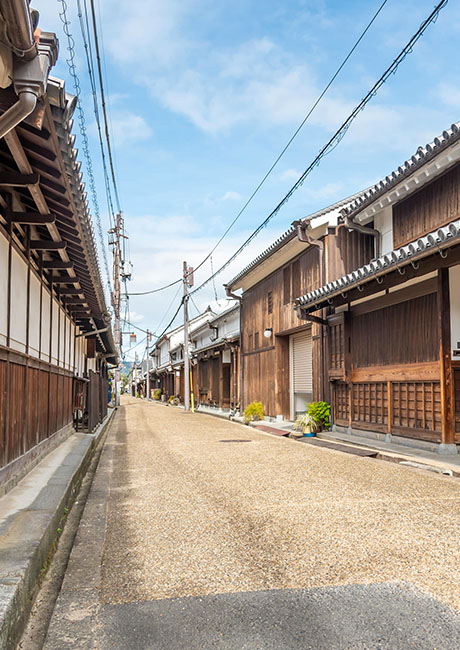

ABOUT USBRINGING
A SUSTAINABLE
LIFE CLOSER
サステナブルな生活をもっと身近に
テクノロジーの進化とともに日常は変わっていきます。
現在、私たちの生活に電子機器は欠かせないものとなっています。
おそらく、これから先も便利で機能性溢れる製品が誕生すれば、それらを日々の暮らしに取り入れて使っていくことになるでしょう。
次は人が進化する番です。
人が育くんできたデジタル社会を持続可能なものへ変えていく責任が私たちには残っています。
一人ひとりが本質を考え、お互いの関わり方を見直すことで世界は変わっていきます。
デジフォースは、世の中へ新しいスタイルを発信し、人の行動に影響を与える存在でありたいと願っています。
そして、心豊かなデジタルライフを皆様と共に築いていくことを目指します。
PURPOSELEADING THE CREATION
OF A SUSTAINABLE SOCIETY
サステナブルな社会づくりをリードする
MISSION
MISSIONINNOVATATE IN
YOURDIGITAL
LIFE
デジタルライフに革新を起こす
VISION
VISIONA RICH DAILY LIFE
WHERE PEOPLE
AND DIGITAL
COEXIST
人とデジタルが共生する心豊かな日常
CULTURE
CULTURENO CASUAL NO INNOVATION
私たちのミッションは、デジタルライフに革新を起こすことです。
デジフォースには、女性が全体の半数以上、外国籍の社員も多く在籍し、働き方や価値観が異なる環境下で、お互いが協力し補い合いながら活躍しています。そして、多様な交流と日々の対話を通して、イノベーションの源泉となる斬新な発想や独自性の高いアイデアが生まれます。
もちろん、うまくいかないことやわかり合えないことにも多々遭遇します。そんな時は、うまくいかないことをおもしろがり、わかり合えないことを楽しむ。
このようなカジュアルモードで働きかける余裕（遊び）が根付いています。
そのうえで、自らが今できることに意識を向けると気持ちが楽になり、革新の種は進化します。
“大丈夫、何とかなるさ”は万国共通の心理的安全性を築くメッセージです。
だから、私たちは今日もつぶやきます。“イノベーション？大丈夫、何とかなる”と。
あとは、互いに関心を寄せ、情報をシェアしながら相手を認め合い続けると、革新の芽が次第に尖り、ゆっくりと突き抜けていきます。
全員がこのような風土を誇りに思っていることも含めて、デジフォース・カルチャーです。
PARTNERSHIP
PARTNERSHIP共生のまち、奈良とともに
デジフォースは奈良県奈良市で生まれました。この場所を選んだのは、歴史や動物（鹿）、自然と共生する“まち”だからです。私たちが掲げるビジョンには“人とデジタルの共生”という言葉があります。奈良には、共生（共に生きること）を持続するための知恵や工夫が溢れています。
そのような環境から刺激と気づきを得ることで、当社の事業はアップデートを成し遂げてきました。
この先も、奈良からデジタルライフ分野に挑み、デザインを起点にした経営モデルで躍動していきたいと考えています。
また、サステナブルな社会づくりを実現するには、個社のアイデンティティや価値観を大きなうねりに変えていくことが肝要です。
当社は、目指すところを同じくする声に対して、主体的に連携しながら課題を解決していくことを推進しています。国内においては、ローカル経済が縮小の一途をたどり、私たちと同じような地方に経営基盤をおく組織は様々な苦労に直面していることと推察します。
大事なことは、サステナブルな社会づくりが世界中のコンセンサスで成立している点です。
デジフォースは、その地を心から愛し、地域の発展に情熱を注ぐ企業と力を合わせ、新しい時代の道しるべになれるよう前を向いて進んでまいります。
- 